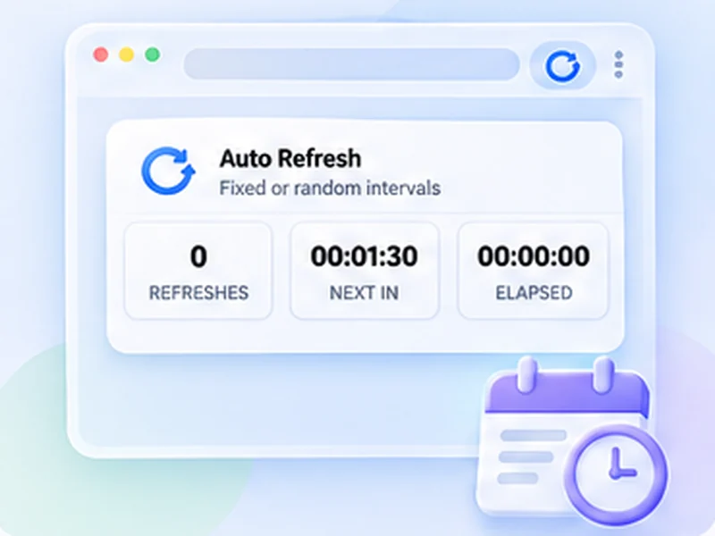

Set a timer. Get on with your day.
Pick an interval, press Start, and the page reloads itself until you stop it. Works on any normal web page, with a separate timer for every tab.

How auto refresh timer works
Pick an interval, press Start, and the page reloads itself until you stop it. Works on any normal web page, with a separate timer for every tab.
For most pages 30 to 60 seconds is enough and is gentle on the website. Go below 10 seconds only when timing really matters, because very fast reloading can get you rate-limited or temporarily blocked by some sites.
Quick setup
Open the page you want to reload.
Click the Free Auto Refresh icon in the toolbar.
Choose a preset or type the same number into Min and Max.
Press Start. Press Stop, or use the on-page counter, when you are done.
Auto refresh a page, tab or site on your schedule
An auto refresh timer reloads the current tab at the interval you choose and keeps going until you pause it, stop it, or it reaches a limit. Use a short interval for pages that update often and a longer one when you only need an occasional check.
Free Auto Refresh gives each tab its own timer. You can auto reload a news page every minute, a dashboard every five, and leave every other tab alone.
Refresh a page every 5 seconds, 30 seconds or 5 minutes
The presets cover the common cases: 5–10 seconds, 15–30, 30–60, 1–2 minutes and 5 minutes. For anything else, type the seconds yourself, or click Edit next to the presets to replace them with your own times. Setting the minimum and maximum to the same number gives a fixed interval; different numbers give a random interval.
Which interval should I use?
Match it to how fast the page really changes. Auctions and build pages: 5 to 10 seconds, briefly. Stock and ticket pages: 30 to 60 seconds. Dashboards and status pages: 2 to 5 minutes.
Why not just use the shortest?
Each refresh is a full request to the website. Very fast reloading wastes bandwidth and can get you rate-limited or temporarily blocked.
Stay in control while it runs
The popup shows the refresh count, the time until the next reload and the time elapsed. The same information appears in a small counter on the page, with pause and stop buttons, and the keyboard shortcut Alt+Shift+R toggles the timer without opening anything.
For longer runs, add a time or count limit so the tab stops on its own.
A worked example: refresh a page every 30 seconds
Say you are waiting for a courier's tracking page to update. Open the page, click the Free Auto Refresh icon and tap the 30–60s preset. To make it exactly 30 seconds, type 30 into both Min and Max. Press Start.
The page reloads at once, the toolbar icon shows a green number, and a small counter appears in the corner of the page counting down from 30. Carry on working in another tab. When you are done, press Alt+Shift+R or the stop button on the counter.
Common mistakes with an auto refresh timer
- Choosing the shortest interval by habit. A page that changes once an hour does not need a reload every five seconds.
- Forgetting it is running. Add a time limit, or check the number on the toolbar icon.
- Refreshing a page with an unsaved form. Pause while typing protects you while you type, not after you stop.
- Expecting it on browser pages. Extensions cannot run on chrome:// or about: pages, or in the extension stores.
How the timer fits with the other features
On its own the timer is an auto reload for one tab. Add a watch rule and it becomes a page monitor that stops on a change. Add limits and it ends by itself. Add hard reload and each refresh fetches fresh files. Save the combination as a profile and it is one click away next time.
Auto refresh a website, a tab or the whole browser?
The extension works per tab, which is what most people mean by auto refresh a website. To refresh several pages, start it in each tab; they run independently.
At a glance
- Any interval you want. Type the seconds yourself, down to one second, or tap a preset from 5 seconds to 5 minutes.
- One timer per tab. Each tab keeps its own interval and counter, so a fast refresh on one page never touches another.
- Starts in one click. The first refresh happens straight away, then the timer takes over. Alt+Shift+R starts and stops it from the keyboard.
Questions, answered.
How do I use the auto refresh timer?
Open the page, click the extension icon, choose a preset or type an interval, and press Start.
Can I pause the timer?
Yes. Use Pause in the popup or on the page counter, and Resume to carry on with the same settings.
Is the timer included for free?
Yes, along with every other feature.
Can different tabs have different timers?
Yes. Each tab has its own interval, counter and limits.
Does it remember my interval?
Yes. Your last settings are used next time, and Alt+Shift+R starts with them straight away.
Can I refresh every second?
Yes, one second is the minimum. Many sites dislike it, so use short intervals only for brief periods.
Does it keep refreshing in a background tab?
Yes. Browsers slow timers in hidden tabs slightly, so the wait can run about a second long.
Try it on your next open tab.
Free for Chrome and Firefox, with no account required.
Not seeing the feature you need?
Share the browser task you would like to make easier. Your idea helps guide what gets built next.